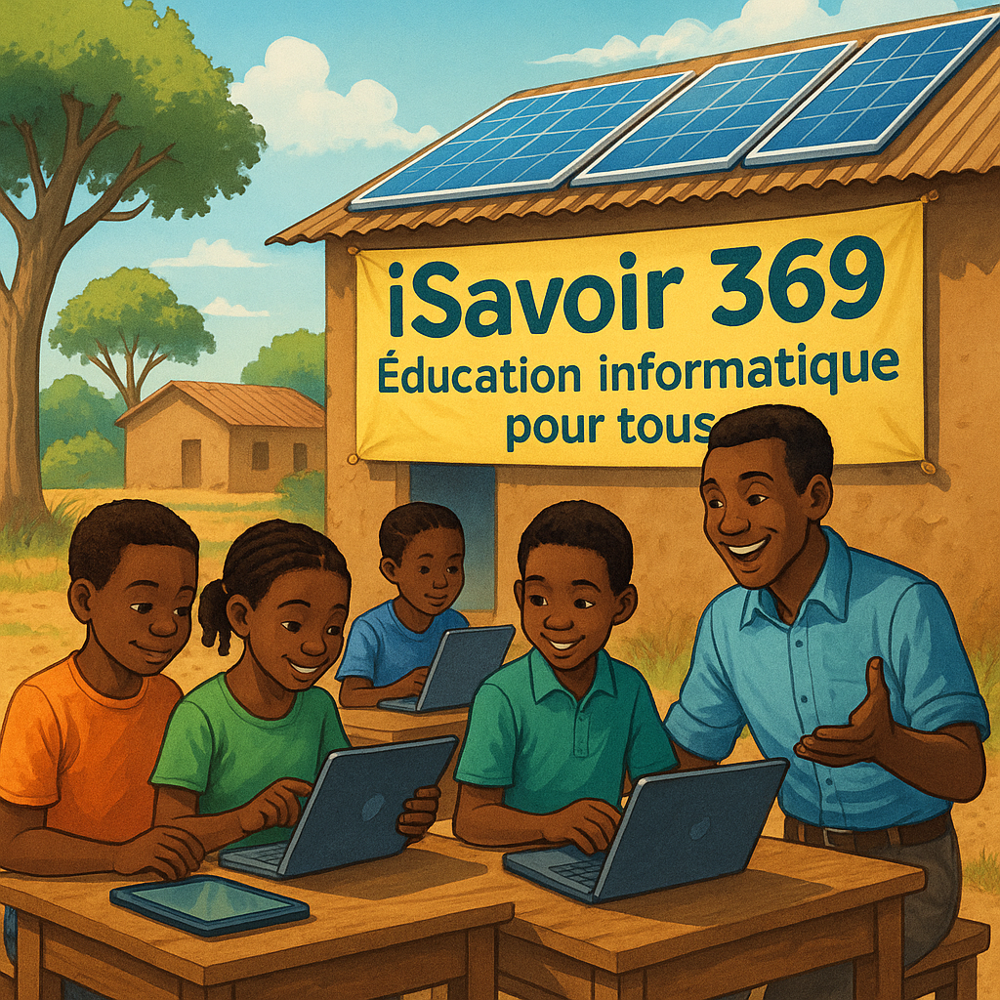

Bienvenue sur le site officiel de GeTech
GeTech est une association de passionnés de génie logiciel, d'électronique et d'innovation technologique.
Nos domaines d'intervention
Éducation
Éducation informatique
Solutions informatiques

Développement logiciel
Promotion de la créativité
Accès au matériel informatique
Développement communautaire
Nos projets

iSavoir 369
iSavoir 369 : Un programme d’éducation numérique destiné aux jeunes, axé sur la formation en informatique, la création de contenus et la sensibilisation aux enjeux numériques.

GeTech-SMS
GeTech-SMS (School Management System) : Un logiciel de gestion scolaire permettant l'inscription, le suivi académique, la gestion financière et l'impression automatisée des bulletins.